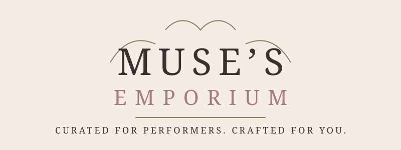

Costume Creation & Alteration
Stage-aware garment work, adjustments, and costume problem-solving for performers who need pieces to move, read, and last.
 Enquire
Enquire
Muse’s Emporium / performer craft
Muse’s Emporium is a warm, theatrical workshop for performers who need practical creative support behind the scenes and in the spotlight.

Brand introduction
Muse’s Emporium sits inside Zentropy Solutions as a performer-focused venture: part creative studio, part maker’s room, part thoughtful support desk for people building a public creative presence.
The tone is refined but approachable, with parchment warmth, antique rose, espresso depth, and quiet gold details that feel handcrafted rather than mass-produced.
What Muse’s Emporium is
Stage-aware garment work, adjustments, and costume problem-solving for performers who need pieces to move, read, and last.
Characterful props, details, and handmade objects that support the act without stealing focus from the performer.
Elegant performer identity marks and visual systems with the same care as a signature costume piece.
Polished performer materials for bookings, introductions, pitches, and concise creative presentation.
Supportive guidance for artists shaping their craft, confidence, technical skills, or creative direction.
Built for performers who need their practical tools and public-facing materials to feel like they belong to the same world.
Concept
A performer might need a hem fixed, a logo refined, a prop designed, or a media pack made coherent. Muse’s Emporium gives those needs one considered creative home.
Understand the performer, the audience, the constraints, and the moment of use.
Select the right mix of practical making, visual design, and creative guidance.
Build or refine the piece, pack, identity, or support material with care.
Leave the performer with something usable, polished, and easier to carry forward.
What is Muse’s Emporium?
Muse’s Emporium is a bespoke creative service for performers, makers, and stage-led brands who need more than a single finished item. It gathers costume refinement, prop detail, visual identity, and practical mentoring into one considered place.
The work is artisan and attentive: made for the person, the performance, and the small details that let a creative presence feel complete.
Contact
Muse’s Emporium enquiries can start through Zentropy Solutions. Share what you are building, what needs support, and where the work needs to show up.
Contact Zentropy Back to Zentropy ventures